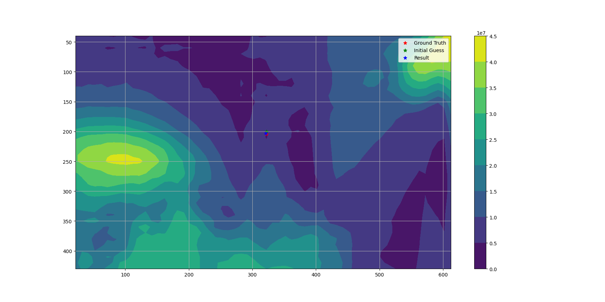
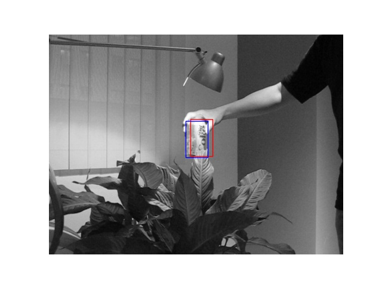
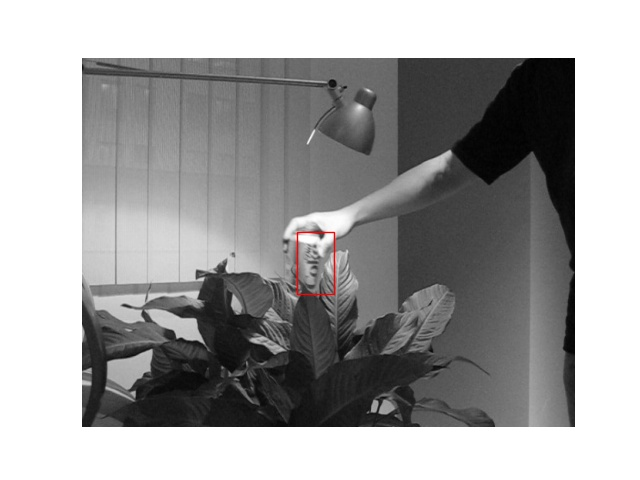
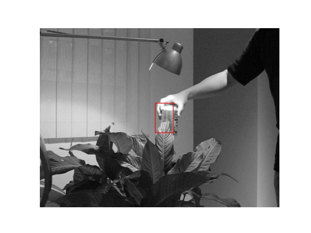
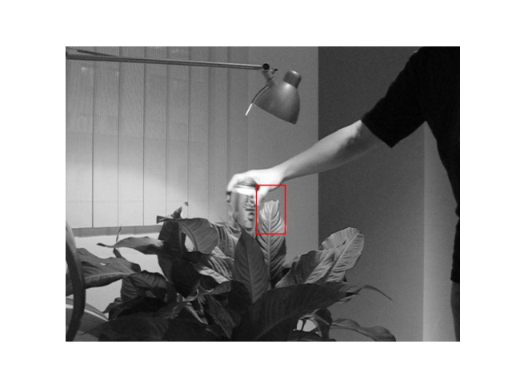

Course Project · CMU 24-785
Course Project · CMU 24-785
Template alignment optimization.
Lucas-Kanade tracking is, underneath, a nonlinear least-squares problem solved once per frame. So which optimizer should solve it? We implemented five and raced them, and the answer explains why the original 1981 paper made the choice it did.
The problem
Image alignment consists of moving and deforming a template to minimize the difference between the template and an image. It underpins optical flow, tracking and mosaicing, and the Lucas-Kanade algorithm is the standard approach. Stated as optimization, the objective is to minimize the sum of squared error between the template and the image warped back onto it:
This project is a comparative study of the optimizers that can solve it: gradient descent, Newton's method, Gauss-Newton, BFGS and Levenberg-Marquardt, evaluated on frame-by-frame tracking across a video sequence. It was a five-person project with Ashwin Nehete, Bradley Feng, Siqiao Fu and Xiaoyang Zhan.
What makes it awkward
The problem is a nonlinear program, and the source of the nonlinearity is worth being precise about. The warp functions themselves are linear. What is nonlinear is the image: pixel values have no smooth relationship to pixel coordinates, so moving the template a little can change the objective a lot.
That has a sharp practical consequence. The image function I and template T cannot be
written down analytically at all; they are just arrays of pixel values, potentially close
to a random distribution. So gradients and Hessians cannot be derived. We compute
gradients by forward difference and approximate the Hessian. And because warped
coordinates land between pixels, we interpolate with a bivariate spline
(RectBivariateSpline) to get values off the discrete grid.
The modelling rests on the standard optical-flow assumptions: brightness constancy between frames, local smoothness of the flow, and small object displacement between successive frames. Evaluation is by Intersection over Union between the predicted and ground-truth bounding boxes.
Is it even convex?
No, and the objective landscape shows exactly why that turns out not to matter. Plotting the objective across the whole image reveals many local minima: regions whose pixel distribution happens to resemble the tracked patch, even though they do not look similar to a human. In the "eyes" of the objective function, several patches look like the target.


The resolution is that we never need the global minimum. Because we assume small displacement between frames, the only solution that means anything is the local one near the previous bounding box, and the problem is locally convex around that starting point. The other minima correspond to positions where the pixel distribution merely looks similar, and reaching them would be a tracking failure, not a success.
The five optimizers
Gradient descent, implemented from scratch, takes a small step opposite the gradient, with a solution-norm threshold of 0.01 and a 1000-iteration cap. It reached an IoU of 0.5023.
Newton's method iteratively minimizes a second-order approximation, which requires the Hessian of the image, and that is precisely the quantity that is expensive and awkward to obtain here. It scored 0.4411, and its final-frame values blew up to x0 = 6685 with an objective of 1,587,600, a clear divergence the other methods avoided.
Gauss-Newton is the one the original Lucas-Kanade uses, and its advantage is structural: as a method for nonlinear least squares it approximates the Hessian from first derivatives alone, so it never needs the second-order image derivative. That is a real saving when the optimization runs on every pair of frames in a video.
Levenberg-Marquardt interpolates between the two regimes. For small damping it behaves like Gauss-Newton, which is better near the minimum where the quadratic model is good; for large damping it behaves like a diagonal approximation with a reduced step, which is better far away. It is also the only method here that checks whether the error actually improved: if the error decreased it reduces the damping tenfold, and if it increased it reverses the update and increases the damping tenfold.



Where BFGS falls over
BFGS, the quasi-Newton method, builds up its Hessian approximation
gradually from successive gradients. We used scipy.optimize.minimize with
method='BFGS'. It scored an IoU of 0.1301, by far the worst of the five, and
the failure has a specific character: it loses the object precisely when motion between two
consecutive frames is fast.
Our reading is that BFGS cannot build a good enough Hessian approximation in the few iterations available before the frame changes, so it fails to reach the minimum, and once the box is off the target the next frame's template is wrong and the failure compounds. Its objective values tell the same story: at frame 100 it reports 48,967 where Gauss-Newton reports 603,369, which looks better until you realize it has converged comfortably onto the wrong patch.


Results
We could not compile fair speed comparisons, since the code was run across several machines with different specifications. Observationally, Gauss-Newton was the fastest and BFGS the slowest. Gradient descent and Levenberg-Marquardt perform respectably on IoU, but Gauss-Newton is best on both accuracy and speed, which is the answer to the question the project asked: Lucas-Kanade uses Gauss-Newton because, for this problem, it is genuinely the right tool.
What did not work
An honest close from the report: performance on the translational warp was good, but the affine case was not up to par. Going from 2 parameters to 6 makes the optimization substantially harder, and fixing it would need work on template updates and possibly bounding-box constraints. Frame rate and resolution matter too, and in a predictable direction: sampling one frame in five widens the gap between frames, enlarges the parameters to be solved, and makes the problem harder, while lower resolution supplies fewer pixels and therefore less information to optimize against.